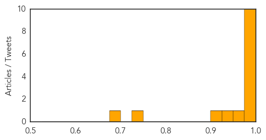

MERS
30-Day Web Trend
24 alerts, 2 warnings

30-Day Twitter Trend
8 alerts, 0 warnings

Article Locations

Article Confidences
Top Articles:
- 1.000
- MERS virus: Don't be paranoid, be wary, say experts- Nikkei Asian Review
- 0.999
- Most South Korean Schools Reopen Amid MERS Virus Scare
- 0.999
- Researcher discusses the spread of MERS
- 0.999
- Health sector opens new training courses against MERS-CoV
- 0.996
- Travelers, breathe easy about MERS
- 0.995
- Govt on alert over Thailand’s first MERS case
- 0.995
- Hajis told to brace up for MERS attack
- 0.992
- SGGP English Edition- Multinational online meeting to cope with MERS-CoV
- 0.990
- Russian tourist with suspected MERS quarantined in Vietnam
- 0.990
- On high alert: Southeast Asia braces for MERS, boosts screening at airports- Nikkei Asian Review
- 0.960
- Russian tourist tests negative for MERS-CoV
- 0.938
- Russian tourist quarantined in Vietnam for MERS check, news, Health News, AsiaOne YourHealth
- 0.906
- No transmission detected among contacts of 2014 MERS patient
- 0.728
- Indonesian toddler suspected of contracting MERS after returning from South Korea
- 0.694
- Leader in Hotel, Airlines, Tourism and Travel Trade News
Top Tweets:
-
No tweets found for Jun 24, 2015
Hepatitis
30-Day Web Trend
1 alerts, 0 warnings

30-Day Twitter Trend
0 alerts, 0 warnings

Article Locations

Article Confidences

Top Articles:
Top Tweets:
-
No tweets found for Jun 24, 2015